🎯 Oferta especial — Atlas Visual de Análises Clínicas por R$ 14,90
Estude Análises Clínicas de um jeito muito mais visual com 80 mapas organizados
Hematologia, microbiologia, parasitologia, bioquímica e imunologia, com esquemas, comparações entre células e exemplos visuais para facilitar a revisão.
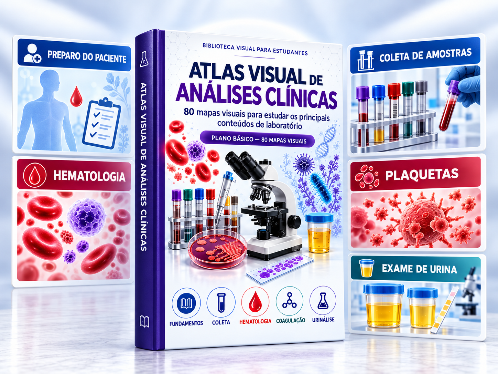
R$ 14,90 · pagamento único · acesso vitalício · baixe e imprima
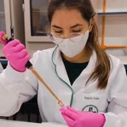
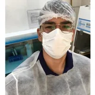
+3.145O que você vai receber
Uma biblioteca visual para entender e revisar os principais temas de Análises Clínicas.
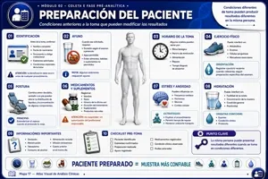
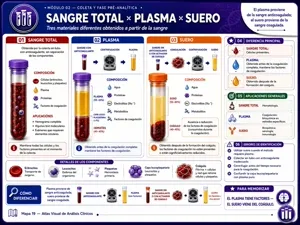
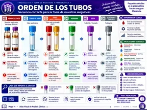
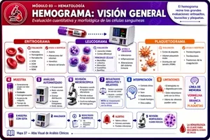
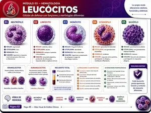
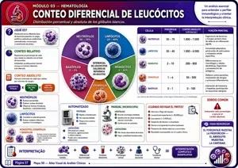
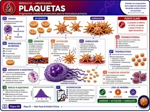
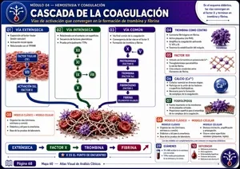
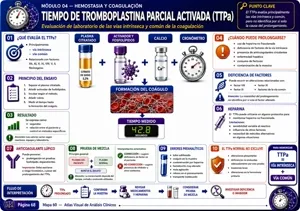
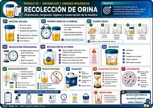
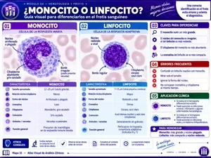
Veja um mapa por dentro
Toque na imagem para ampliar e conferir os detalhes. Prévias originais do material em espanhol.
80 Mapas Visuais de Análises Clínicas
Conteúdos visuais, organizados e fáceis de consultar, abrangendo hematologia, microbiologia, bioquímica, imunologia, parasitologia e outras áreas do laboratório.
Acesso Vitalício
Compre uma única vez e tenha acesso aos mapas para sempre. Revise pelo celular quando quiser ou imprima os mapas que mais usa.
Uma biblioteca visual completa de Análises Clínicas
Os mapas estão organizados por áreas para facilitar seus estudos e revisões.
01
Fundamentos do Laboratório
- Biossegurança
- Vidrarias
- Equipamentos
- Organização do laboratório
- Boas práticas
02
Coleta de Amostras e Fase Pré-analítica
- Tipos de amostras
- Tubos de coleta
- Anticoagulantes
- Ordem de coleta
- Conservação e transporte
- Erros pré-analíticos
03
Hematologia
- Componentes do sangue
- Células sanguíneas
- Hemograma
- Eritrócitos
- Leucócitos
- Plaquetas
- Índices hematimétricos
04
Hemostasia e Coagulação
- Hemostasia
- Cascata de coagulação
- Fatores de coagulação
- Testes de coagulação
- Principais alterações
05
Microbiologia
- Bactérias
- Fungos
- Meios de cultura
- Coloração de Gram
- Técnicas de identificação
06
Parasitologia
- Protozoários
- Helmintos
- Ciclos biológicos
- Formas evolutivas
- Métodos de identificação
07
Bioquímica Clínica
- Glicose
- Função renal
- Função hepática
- Perfil lipídico
- Enzimas
- Marcadores laboratoriais
08
Imunologia
- Antígenos
- Anticorpos
- Resposta imune
- Imunoglobulinas
- Testes imunológicos
09
Urinálise
- Exame físico
- Exame químico
- Sedimentoscopia
- Cristais
- Cilindros
- Células encontradas
10
Controle de Qualidade
- Erros laboratoriais
- Controle interno
- Controle externo
- Calibração
- Boas práticas
- Segurança dos resultados
Veja o que dizem os estudantes
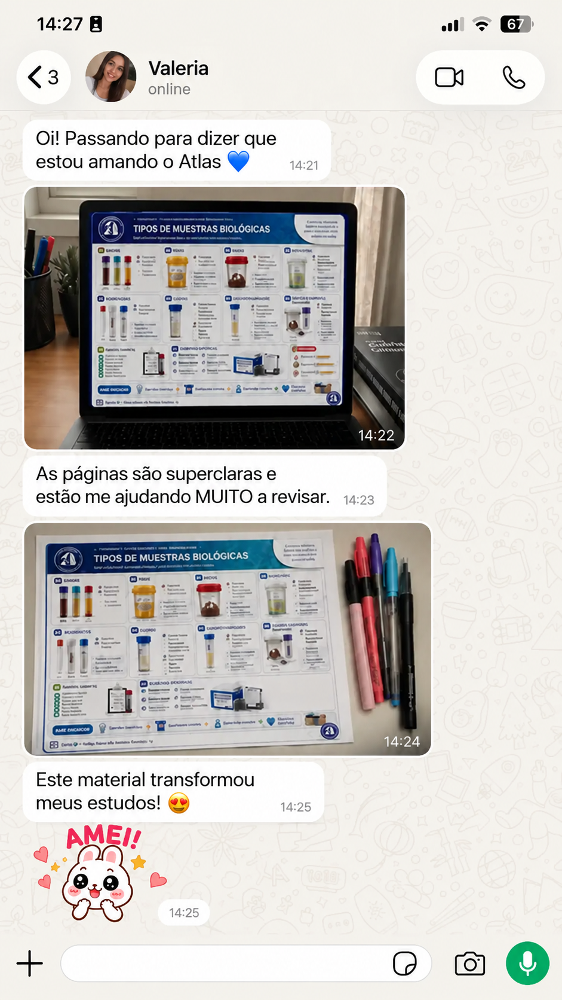
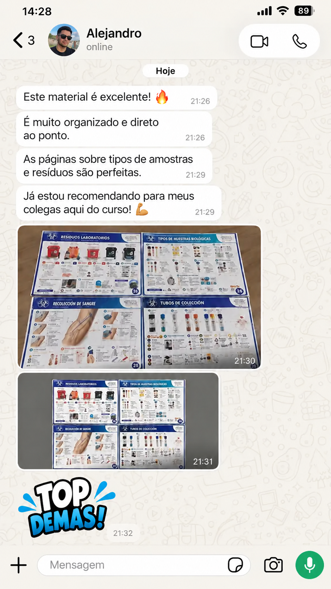
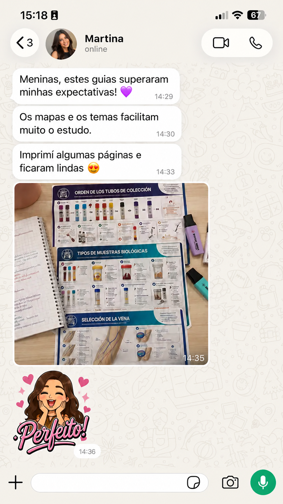
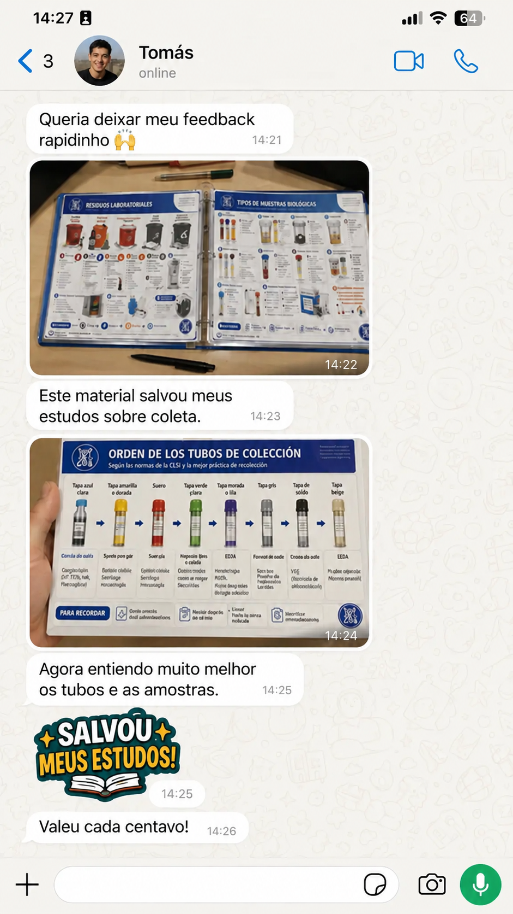
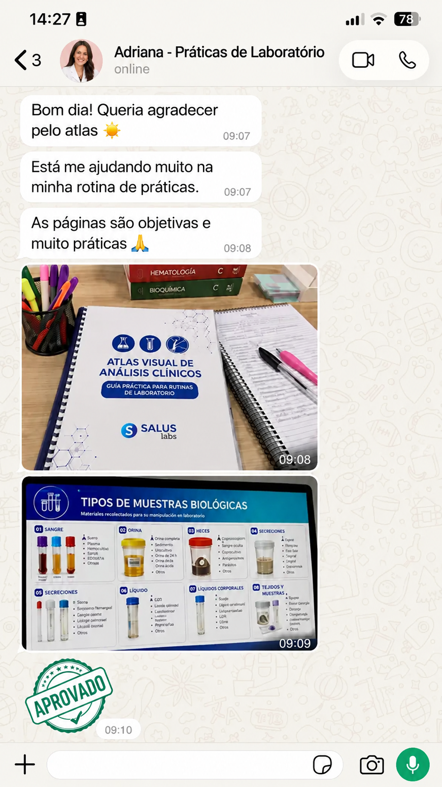
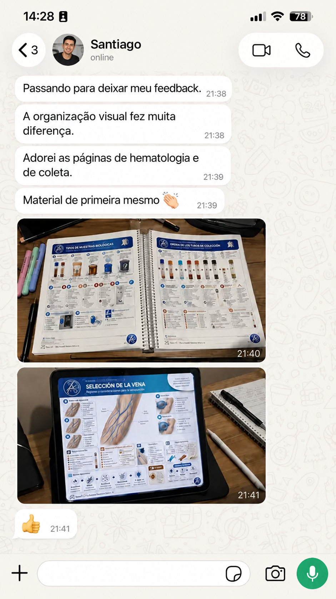
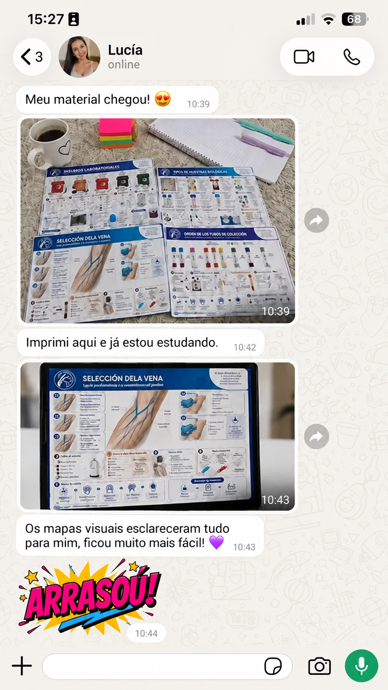
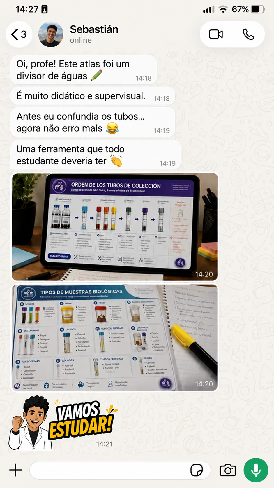
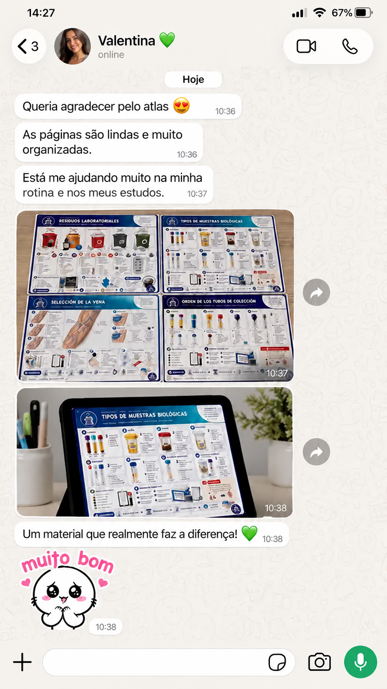
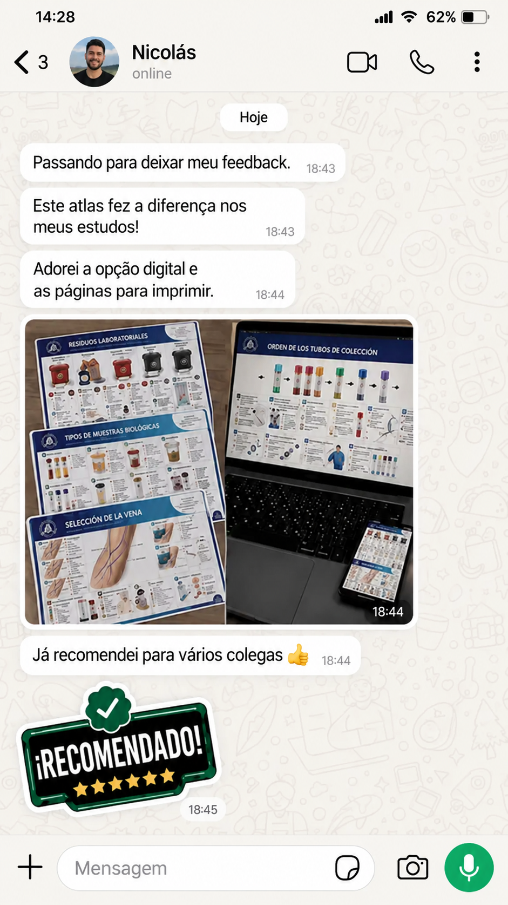
Seu Atlas Visual por R$ 14,90
Pagamento único. Sem mensalidades e sem assinatura.
Atlas Visual — Plano Básico
R$ 14,90
Pagamento único
- 80 Mapas Visuais de Análises Clínicas
- Conteúdo dividido por temas
- Acesso pelo celular, tablet ou computador
- Material digital em PDF: baixe e imprima quando quiser
- Acesso após a confirmação do pagamento
- Sem mensalidade
Compra segura • Pagamento único • Acesso digital
Conteúdo organizado com
revisão especializada
O Atlas Visual de Análises Clínicas foi desenvolvido para apresentar conteúdos de laboratório de forma mais visual, organizada e fácil de consultar, com atenção à clareza das informações e à experiência de estudo.
Profa. Laura Mendoza
Professora e especialista em Análises Clínicas
La Profa. Laura Mendoza trabaja en el área de Análisis Clínicos y contribuyó a que los contenidos del Atlas Visual se presentaran de manera clara, organizada y didáctica.
Sua revisão editorial ajuda a transformar conceitos de hematologia, coleta de amostras, urinálise, microbiologia, bioquímica e outras áreas do laboratório em mapas visuais mais simples de consultar, revisar e compreender.
O objetivo é oferecer aos estudantes um material complementar que reúna organização, recursos visuais e linguagem educativa acessível, facilitando o estudo dos principais temas de Análises Clínicas.
Formação
Biomedicina e Ciências Biológicas
Experiência
Experiência no ensino, na organização e na apresentação didática de conteúdos relacionados às rotinas e aos fundamentos de laboratório.
Área de atuação
Análises Clínicas e educação laboratorial. Material desenvolvido para estudantes de Biomedicina, Farmácia, Bioanálise, Tecnologia Médica e áreas relacionadas.
Revisão do material
Acompanhamento da clareza, da organização visual, da linguagem educativa e da apresentação dos conteúdos de laboratório.
“Nosso objetivo é transformar temas de laboratório que muitas vezes parecem complexos em conteúdos mais visuais, organizados e fáceis de revisar.”
- Conteúdo educativo
- Organização por temas
- Revisão visual e textual
- Material complementar de estudo
30 dias de garantia para conhecer o material
Você terá 30 dias para acessar o material e conhecer o conteúdo. Se nesse período considerar que ele não é para você, solicite o reembolso para receber seu dinheiro de volta.
- Compra protegida
- Pagamento processado com segurança
- Garantia de 30 dias
- Pagamento único
Perguntas frequentes
O material é físico ou digital?
É digital: você pode visualizar pelo celular, tablet ou computador, ou baixar o PDF e imprimir. Nenhum material físico é enviado pelo correio.
Como receberei o acesso?
Após a confirmação do pagamento, você receberá as instruções de acesso pelo e-mail ou pelo canal informado durante a compra.
Posso acessar pelo celular?
Sim. O material pode ser consultado pelo celular, tablet ou computador.
Preciso pagar mensalidade?
Não. O pagamento é único, sem cobrança mensal e sem assinatura.
Quais formas de pagamento são aceitas?
As formas de pagamento disponíveis são apresentadas na página de checkout, antes de você finalizar a compra.
Confira todas as opções e condições na página de pagamento.
Para quais cursos o material é recomendado?
O conteúdo é indicado principalmente para estudantes de Biomedicina, Farmácia, Bioanálise, Tecnologia Médica, Técnico em Análises Clínicas, Patologia Clínica e outros cursos da área laboratorial.
Transforme conteúdos complexos de laboratório em uma biblioteca visual fácil de consultar
Garanta o plano básico e comece a estudar Análises Clínicas de forma mais organizada.
R$ 14,90 • Pagamento único • Garantia de 30 dias